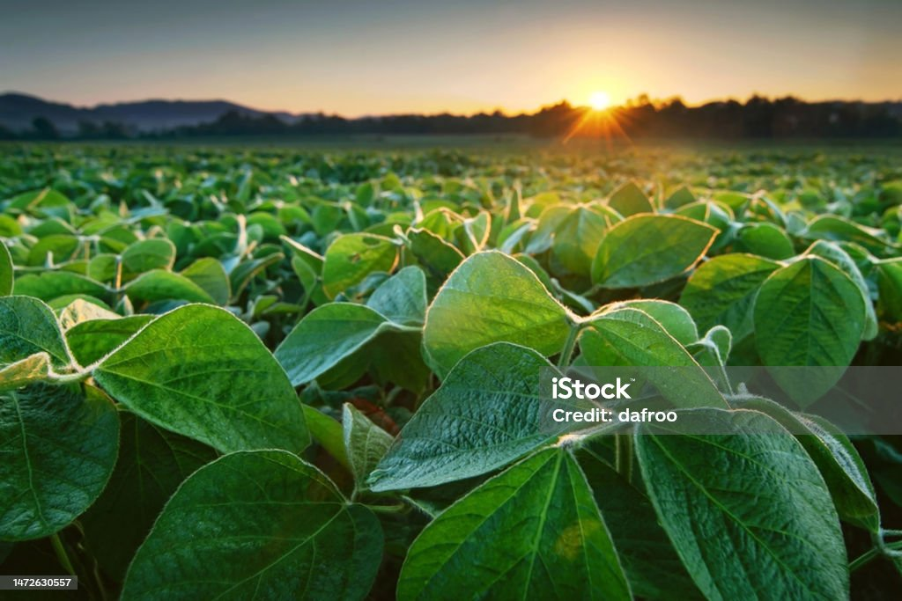
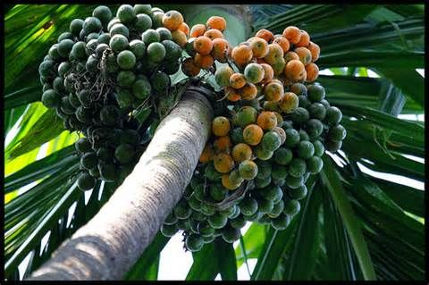
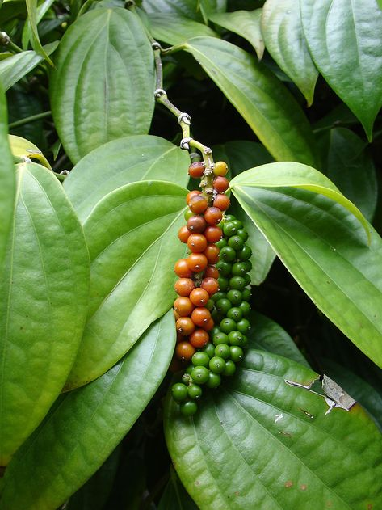
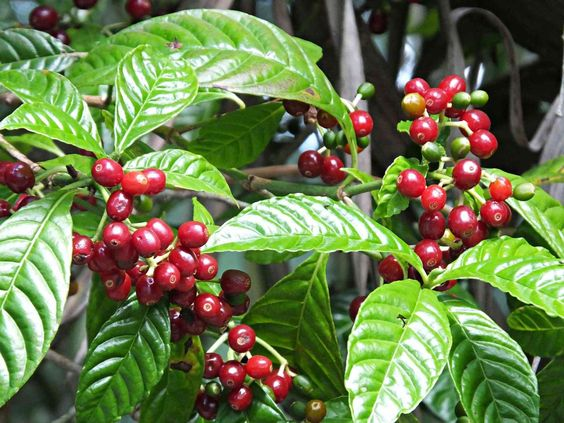
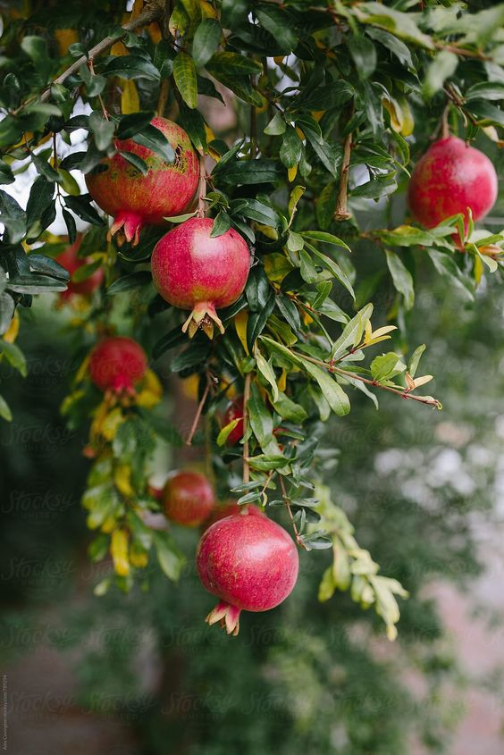
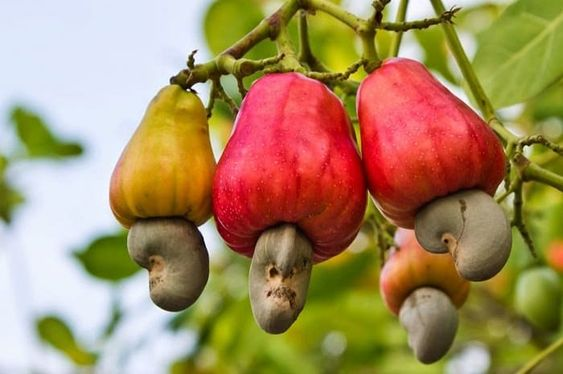

Agriculture, the age-old practice of cultivating the land and raising livestock, stands as a pivotal force in human development. Its roots intertwine with the very fabric of civilization, marking the shift from hunter-gatherer societies to settled communities. Beyond its fundamental role in providing sustenance, agriculture shapes landscapes, influences ecosystems, and fuels economic systems globally. From traditional farming methods to cutting-edge agribusiness, agriculture adapts to meet the challenges of a changing world. Today, it integrates technology, genetics, and sustainable practices to address issues like population growth, climate change, and resource limitations. As a dynamic and evolving sector, agriculture reflects humanity's ability to innovate and harmonize with the environment, serving as a testament to our enduring partnership with the land.

Crop cultivation is the systematic practice of nurturing plants for human consumption or various purposes. This essential facet of agriculture involves precise steps, from seed selection to harvesting. Successful cultivation relies on factors like soil quality, climate, and irrigation. Farmers blend traditional methods with modern technologies to optimize yields sustainably. It's the cornerstone of global food production, providing the grains, vegetables, and fruits crucial for sustenance. The cultivation process not only meets nutritional needs but also significantly impacts the economies of farming communities. With innovations like genetically modified crops and sustainable practices, crop cultivation harmonizes nature and human innovation for a fruitful coexistence.

Areca Nut
Areca nut, also known as betel nut, is the seed of the Areca palm (Areca catechu). Commonly chewed in many Asian cultures, it plays a significant role in social and religious practices. The nut, often wrapped in a betel leaf with slaked lime, produces a stimulant effect when chewed. Despite cultural significance, prolonged use raises health concerns due to its association with oral and esophageal cancers. Areca nut cultivation is vital for economies in regions like Southeast Asia, where it serves both traditional practices and economic sustenance..

Pepper
Pepper, a globally cherished spice, is derived from the berries of the Piper nigrum vine. Known for its pungent flavor, pepper comes in various forms like black, white, and green, each signifying different stages of ripeness. Originating from Southeast Asia, it has become a staple in culinary traditions worldwide. Beyond its culinary uses, pepper holds historical significance for its role in trade, often referred to as "black gold." Today, it remains a versatile spice, adding depth and zest to dishes across cultures, embodying its enduring appeal in the culinary realm.

Product 3
Coffee, a globally cherished beverage, is brewed from the roasted seeds of Coffea plants. Known for its invigorating aroma and rich flavor, coffee has become a daily ritual for millions. With origins in Africa, it has evolved into a cultural and social phenomenon worldwide. From espresso to cappuccino, the variety of coffee styles caters to diverse preferences. Beyond its stimulant properties, coffee houses serve as communal spaces, fostering connections and conversations. This caffeinated elixir continues to transcend borders, symbolizing both comfort and a shared love for its robust and complex taste.

Product 4
Pomegranate, a jewel-toned fruit, is celebrated for both its vibrant taste and health benefits. Encased in a thick, leathery skin, its jewel-like seeds burst with sweet-tart juice. Rich in antioxidants and vitamins, the pomegranate has been revered in various cultures for its symbolic and medicinal value. With a history dating back centuries, this ancient fruit has transcended time, becoming a symbol of fertility, abundance, and rejuvenation. Today, its succulent arils find a place in diverse culinary creations, adding a burst of flavor and nutrition to salads, desserts, and beverages.

Product 5
Cashew, a tropical nut harvested from the Anacardium occidentale tree, is prized for its creamy texture and distinct flavor. Enclosed in a shell hanging from the cashew apple, the kidney-shaped nut is rich in healthy fats, protein, and essential nutrients. Beyond its culinary appeal, cashews contribute to heart health and weight management. Widely used in both savory and sweet dishes, the cashew's versatility makes it a sought-after ingredient, enhancing the taste and nutritional profile of various cuisines across the globe.